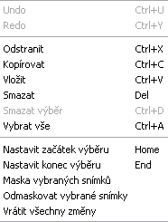

Nabídka Upravit - VirtualDUB
Co k čemu je

- Undo
- klasické "Zpět", pokud je aktivní, je u něj popis toho, co "zpětuje".
- Redo
- klasické "Vpřed", pokud něco "odzpětujete", tímto to můžete vrátit.
- Odstranit
- práce se schránku, vyjme video a vy jej můžete vložit na jiné místo. Na původním místě nezůstane.
- Kopírovat
- pracuje jako Odstranit, s tím rozdílem, že video nechá i na původním místě. Pokud ho někam vložíte, budete ho mít ve videu dvakrát.
- Vložit
- jestliže něco máte ve schránce (viz Odstranit a Kopírovat), tímto to tdo videa vkládáte.
- Smazat
- odstraní z videa část filmu. Nemáte to ale nikde ve schránce, takže to vrátíte leda tak přes Undo.
- Smazat výběr
- pokud označíte nějakou část videa, tímto výběr smažete.
- Vybrat vše
- vybere celé video.
- Nastavit začátek výběru
- pokud chcete smazat část videa, tímto vyberete začátek této části.
- Nastavit konec výběru
- zde volíte konec výběru (viz výš) .
- Maska vybraných snímků, Odmaskovat vybrané snímky
- nevím.
- Vrátit všechny změny
- vrátí video do stavu, v jakém jste s ním začínali.
Předchozí: Nabídka "Soubor"
Další: Nabídka: "Přejít"
Video na PC: Vytvořeno v roce 2005 a víc. Autorem je Jan 'Šlaha' Šlahora. Veškerá práva vyhrazena autorům článků. Pokud není uvedeno jinak, jsem to já.